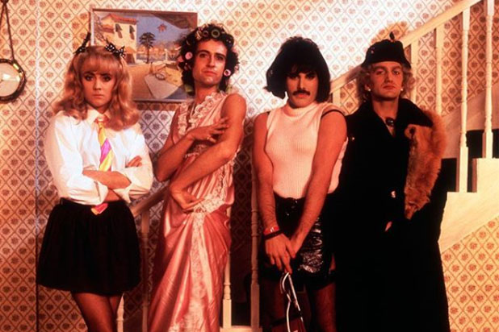

Queen
Banda de rock británica que gozó de gran fama desde mediados de los setenta y durante toda la década de los ochenta. Sus integrantes fueron Freddie Mercury, Brian May, Roger Taylor y John Deacon.
Por Sofía Del Veliz
Los orígenes de Queen se remontan al inicio de los sesenta, cuando los miembros de Smile buscaban a un nuevo vocalista debido a que el anterior dejó el grupo inesperadamente. Se hizo una prueba al cantante del grupo Sour Milk Sea, quien era Freddie Bulsara, que posteriormente cambiaría su nombre a Freddie Mercury y fue rápidamente admitido.
Por aquel entonces Freddie Mercury ya estaba acostumbrado a aparecer en público y sobre el escenario con vestimentas llamativas y atrevidas. Freddie contaba con una prodigiosa voz y sobrados conocimientos de piano. Fue Mercury quien convenció al resto de la necesidad de una refundación, empezando por un cambio de nombre. Además los convenció de experimentar con técnicas y puestas en escena más elaboradas; de este modo, en 1970, nació Queen.
LA EVOLUCIÓN E
HISTORIA DE
QUEEN
En 1973, Queen se encerró en los Trident Studios de Londres para grabar, bajo la supervisión de Roy Thomas Baker en los controles, su primer trabajo, Queen I, demostración de un rock agresivo, con el sonido que en adelante caracterizaría a la banda. Le siguió, a principios de 1974, Queen II, en plena evolución y búsqueda de madurez.
A Sheer heart attack, de 1974, fue para muchos un álbum de transición. El siguiente, A night at the opera, sería el disco que llevaría al estrellato a Queen y consagraría a sus miembros como dignísimos sucesores de The Beatles o de los Rolling Stones. En 1975, el single de lanzamiento Bohemian Rhapsody fue un éxito mundial. La diferencia más notable respecto a trabajos anteriores radica en la intervención de todos los integrantes del grupo en la composición de los temas que integran el álbum, que anteriormente estaba en manos de May y Mercury.
No me importa morir mañana. He vivido, en toda la extensión de la palabra
Freddie Mercury
No me importa morir mañana. He vivido, en toda la extensión de la palabra
Freddie Mercury
El último albúm editado con anterioridad al fallecimiento de Freddie Mercury, víctima del sida, llevó el título de Innuendo. Tras la muerte de Freddie, Brian May comenzó a editar en solitario, John Deacon dejo Queen tras la muerte de Freddie y se reunió con ellos una única vez en 1997 para la grabación de lo que fue la canción en honor a Mercury y la última como Queen. ''No-One but You (Only the Good Die Young)'' La espectacularidad y dinamismo de sus actuaciones más la asimilación al rock de tendencias jazzísticas, sinfónicas y operísticas, fueron algunas de las claves de su éxito.
DESPUES DEL
FALLECIMIENTO DE
FREDDIE MERCURY
A partir de 2005, los álbumes de Queen han pasado un total de 1322 semanas (veintiséis años) en las listas de álbumes del Reino Unido, más tiempo que cualquier otro artista. Su álbum Greatest Hits II está en el octavo lugar con mas copias vendidas. El grupo ha lanzado un total de dieciocho álbumes número uno, dieciocho sencillos. Ha sido reconocido por haber hecho contribuciones significativas a géneros como el hard rock y el heavy metal, entre otros. Por lo tanto, la banda ha sido citada como influencia por muchos otros músicos.